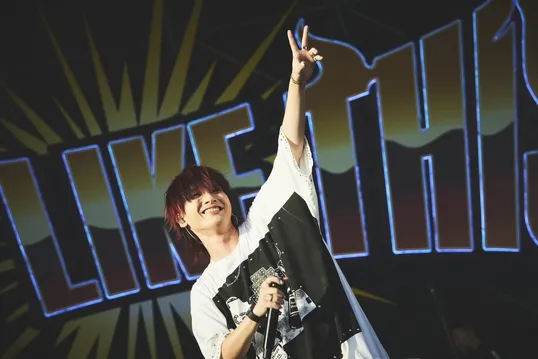
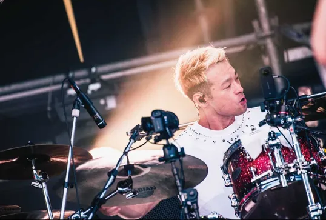
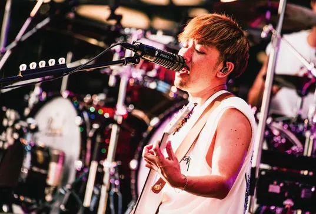
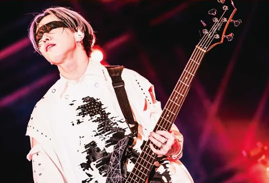

구성원 전 멤버

YOSUKE (요스케, Vocal)
요스케는 이케가 탈퇴한 후 2023년 4월 14일 부터 스파이에어에 합류 하여 보컬로서 활동중이다.
SPYAIR 합류 전 후쿠오카에서 인디 밴드 및 솔로 활동을 하였다.
멤버 중 비교적 영어를 잘하는 편이라 인스타 라이브 방송 및 해외 라이브에서 외국 팬들과 영어로 소통하기도 한다.
1998년생이다. 스파이에어에서 막내이고 팀 내 유일한 20대이다.

KENTA (켄타, Drum)
스파이에어에서 드럼을 연주한다.
평소 드럼을 연주하며 코러스를 자주 넣는다. 동시에 박자 또한 흐트러지지 않는다는 게 특징이다.
현재 멤버들 중 최장신이다. 또한 드러머답게 매우 다부진 몸을 보유하고 있다.
1985년생이다. 스파이에어의 초기 멤버 중 한 명이다.

UZ (유지, Guitar)
스파이에어에서 기타와 프로듀싱을 맡고 있다.
좋은 작곡 실력에 비해 기타 솔로를 잘 못 친다.
원곡에서 이케(전 보컬)가 부르던 부분들을 함께 다시 불러주며 이미지네이션이나 I'm a beliver같은 곡에서는 아예 본인이 코러스로 참여했다.
1984년생이다. 스파이에어의 초기 멤버 중 한 명이다.

Momiken (모미켄, Bass)
스파이에어에서 베이스를 연주한다.
멤버들 중에서 가장 수수께끼에 싸인 사항이 많은 멤버이다.
눈 근처에 가면과도 같은 아이마스크를 하고 있다. 덕분에 캐릭터성이 강하다 보니 팬아트도 꽤 있는 편이다.
1984년생이다. 스파이에어의 초기 멤버 중 한 명이다.